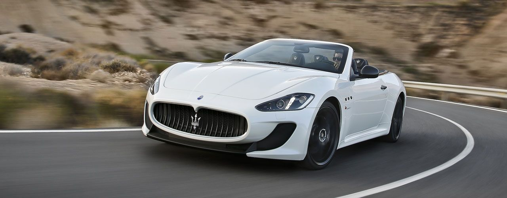

This is Maserati’s story. When the Maserati brothers opened in 1914 the Officine Alfieri Maserati in the heart of Bologna, Italy, they could hardly have imagined the impact they would have on the world. Alfieri, Ettore, Ernesto and Bindo: four brothers united by their unrelenting passion for cars and engines. Their vision, enthusiasm and expertise turned out to be the cornerstones of what would one day become a global brand, universally recognised as a symbol of motoring excellence.
Maserati prides itself on its long and glorious heritage Officine Alfieri Maserati was founded on 1 December 1914 in Bologna, Italy. Since then, Maserati has played a consistently important role in the history of sports car culture and its development. Over a century of activity has brought with it glorious achievements, both on the road and the track, as well as more challenging times, which have helped forge the company’s character and personality.
